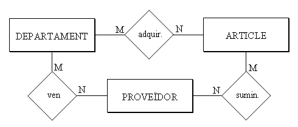
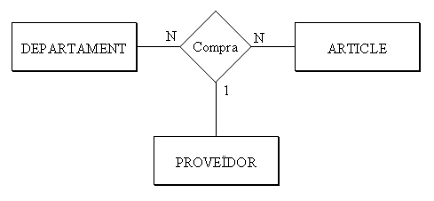
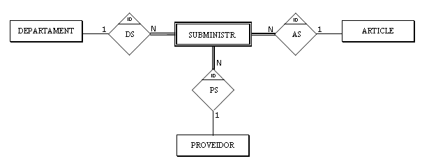

5. Relacions de grau major que dos
Anem a estudiar una miqueta més el cas de les relacions ternàries. Donada la seua complexitat podríem, i de fet així es fa de vegades, descompondre-la en tres relacions binàries

Així pot haver una ocurrència que Comptabilitat adquireix una calculadora, una altra que Comptabilitat compra a Distribucions Garcia, S.L., i una altra que Distribucions Garcia, S.L. subministra calculadores.
Però això no té per què voler dir que la calculadora comprada per Comptabilitat, l'haja comprada a Distribucions Garcia, S.L. Pot haver-la comprada a un altre proveïdor, i el que li compra a Garcia són bolígrafs (encara que Garcia també en puga vendre de calculadores).
En canvi en una relació ternària es diu qui compra, què compra i a qui compra. Per tant una relació ternària proporciona més informació que 3 binàries.

La cardinalitat es calcula fixant-ne 2 i veient quantes ocurrències entren en la tercera. Així, un determinat departament pot comprar un determinat article a més d'un proveïdor (N). Un article d'un proveïdor el pot comprar més d'un departament (N). I un departament pot comprar a un proveïdor més d'un article. No té perquè ser sempre N:N:N (en aquest cas de les ternàries no utilitzarem ja la M, només la N). Per exemple suposem que un departament sempre compra un article al mateix proveïdor; aleshores en Proveïdor tindríem 1.

Algunes ferramentes de disseny de B.D. només permeten relacions binàries. Aleshores s'hauria de fer un truc per a representar la relació ternària, construint una entitat nova, dèbil, que depenga en identificació de les altres 3. Veurem les entitats dèbils en el següent punt.

Llicenciat sota la Llicència Creative Commons Reconeixement NoComercial CompartirIgual 3.0